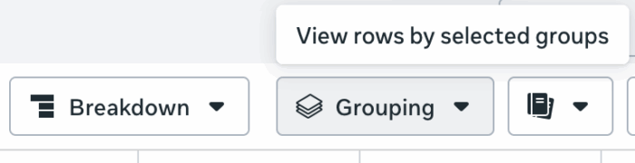
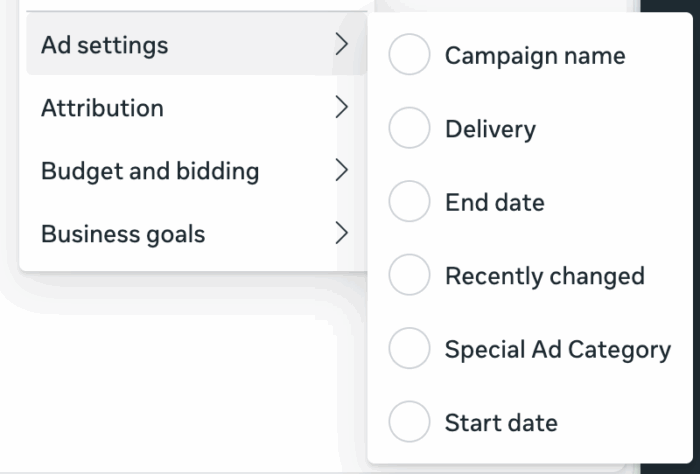
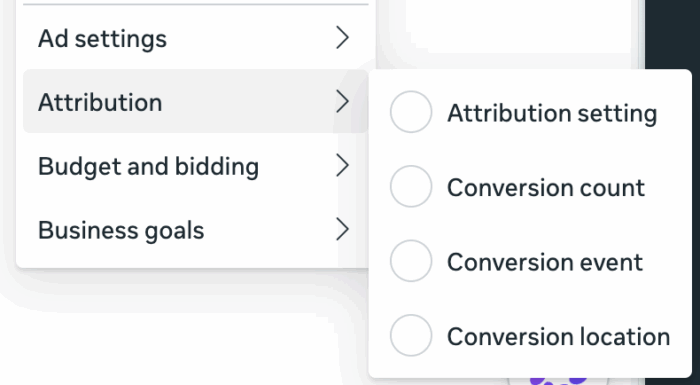
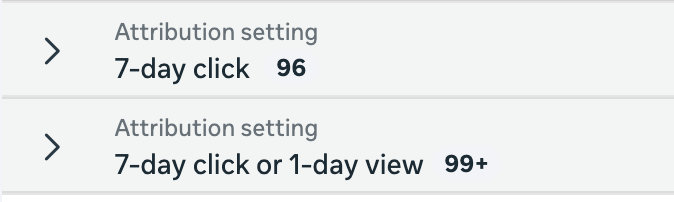
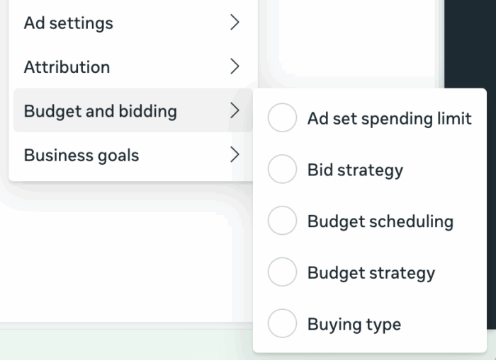
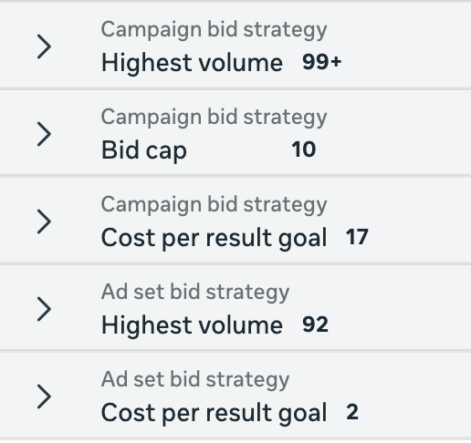
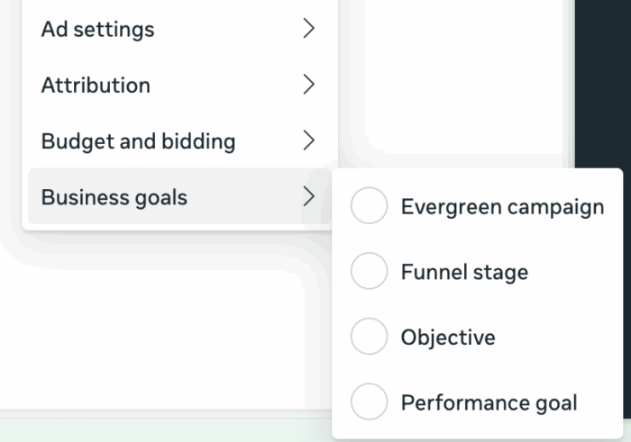

Grouping в Ads Manager: нова функція для сортування кампаній і груп оголошень
Якщо ти нещодавно відкривав Ads Manager і помітив нову кнопку поруч з Breakdowns - це не глюк. Meta тихо додала функцію Grouping, і поки вона є не у всіх.

Що таке Grouping
Grouping - це інструмент для групування кампаній або груп оголошень за спільними параметрами. Знаходиться він поруч з Breakdowns у верхній панелі Ads Manager і доступний тільки на рівні кампаній і груп оголошень - на рівні оголошень його немає.
Важливо відразу зрозуміти різницю між Grouping і Breakdowns:
- Breakdowns розбиває результати кожної кампанії або групи оголошень на частини - наприклад, показує вік, стать, плейсмент окремими рядками для кожної кампанії.
- Grouping збирає кампанії або групи оголошень разом за спільною ознакою - наприклад, об'єднує всі кампанії з однаковою стратегією ставки в один рядок.
Коротко: Breakdowns ділить, Grouping збирає.
Чотири категорії групування
Всі доступні параметри розбиті на чотири розділи.
Ad settings
Тут можна згрупувати за налаштуваннями кампаній і груп оголошень:
- Campaign name - назва кампанії
- Delivery - статус доставки
- End date - дата завершення
- Recently changed - нещодавно змінені
- Special Ad Category - спеціальна категорія реклами
- Start date - дата запуску

Attribution
Групування за параметрами атрибуції:
- Attribution setting - вікно атрибуції (наприклад, 7-day click або 7-day click + 1-day view)
- Conversion count - тип підрахунку конверсій
- Conversion event - подія конверсії
- Conversion location - місце конверсії

Це особливо корисно якщо в акаунті різні групи оголошень з різними вікнами атрибуції - можна одразу побачити як вони відрізняються за результатами.

Budget and bidding
Групування за бюджетом і стратегією ставок:
- Ad set spending limit - ліміт витрат групи
- Bid strategy - стратегія ставки
- Budget scheduling - розклад бюджету
- Budget strategy - тип бюджету
- Buying type - тип закупівлі

Наприклад, можна одразу побачити всі кампанії з Highest volume окремо від тих що з Bid cap або Cost per result goal.

Business goals
Групування за бізнес-цілями:
- Evergreen campaign - вічнозелена кампанія
- Funnel stage - етап воронки (верхній, середній, нижній)
- Objective - ціль кампанії
- Performance goal - ціль ефективності

Funnel stage - цікавий параметр для тих хто структурує акаунт по воронці. Evergreen campaign поки що трохи незрозумілий - Meta групує кампанії як "Evergreen" і "Not Evergreen", але чіткого пояснення що саме вважається вічнозеленим поки немає.
Кому це буде корисно
Grouping найбільше допоможе при роботі з великими акаунтами де десятки кампаній і груп оголошень. Замість того щоб вручну фільтрувати або сортувати - можна швидко згрупувати все за стратегією ставки, атрибуцією або ціллю і відразу порівняти результати.
Для невеликих акаунтів з 5-10 кампаніями функція не дасть відчутної різниці - там і так все видно.
Поки що Grouping є не у всіх акаунтах - Meta поступово розгортає оновлення. Якщо кнопки ще немає - просто чекай.